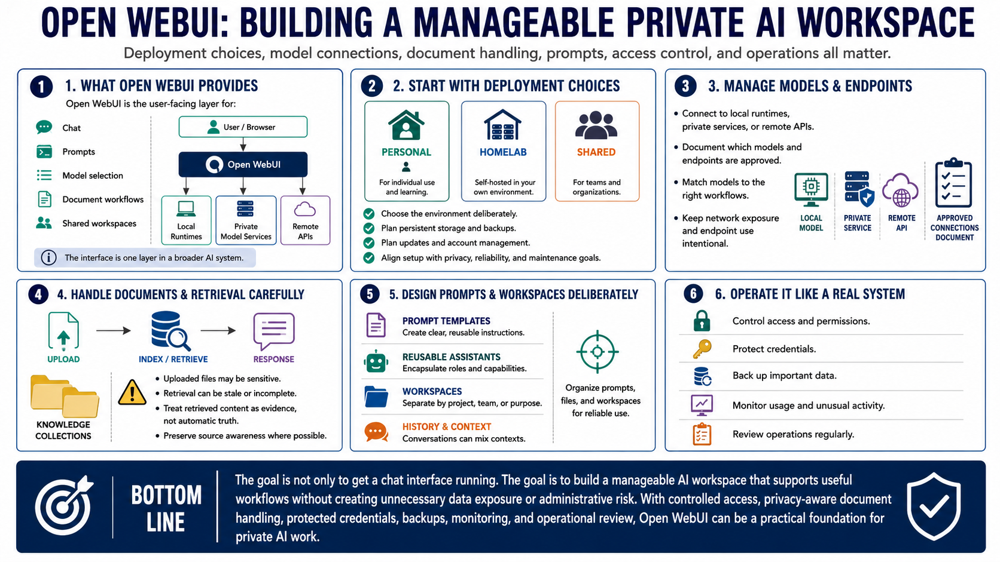

Course Summary and Key Takeaways
Connecting to LMS... Progress: in progress

Narration
Open WebUI can make local and private AI workflows easier to use, organize, and administer. It provides the user-facing layer for chat, prompts, model selection, document workflows, and shared workspaces. It can connect to local runtimes, private model services, or remote APIs, but the interface is only one layer in a broader AI system.
Strong use starts with clear deployment choices. Decide whether the system is personal, homelab-based, or shared. Plan persistent storage, backups, updates, account management, model endpoints, and network exposure. Document which models and endpoints are approved for which workflows. Keep installation choices aligned with privacy, reliability, and maintenance goals.
Document and prompt workflows need care. Uploaded files may be sensitive, retrieval can be stale or incomplete, and conversation history can mix contexts. Reusable prompts and workspaces are powerful when they are clear, maintainable, and separated by purpose. Treat retrieved content as evidence, not automatic truth, and preserve source awareness where possible.
The goal is not only to get a chat interface running. The goal is to build a manageable AI workspace that supports useful workflows without creating unnecessary data exposure or administrative risk. With controlled access, privacy-aware document handling, protected credentials, backups, monitoring, and operational review, Open WebUI can be a practical foundation for private AI work.